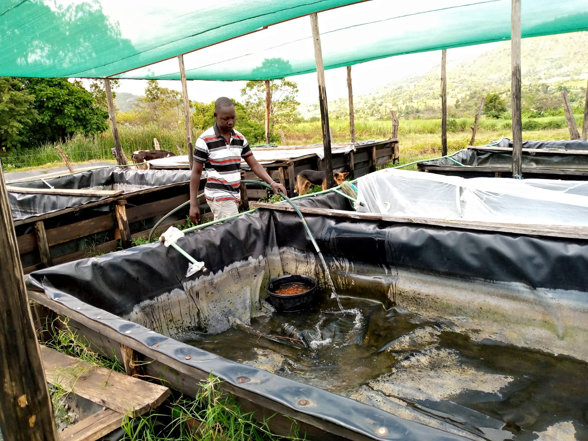
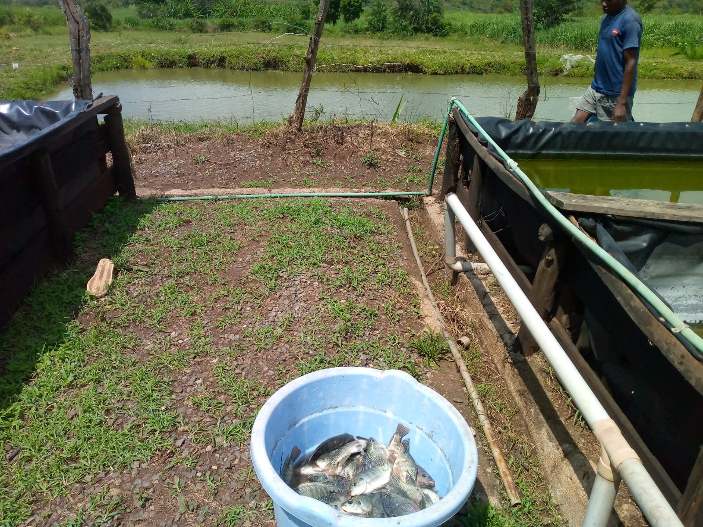
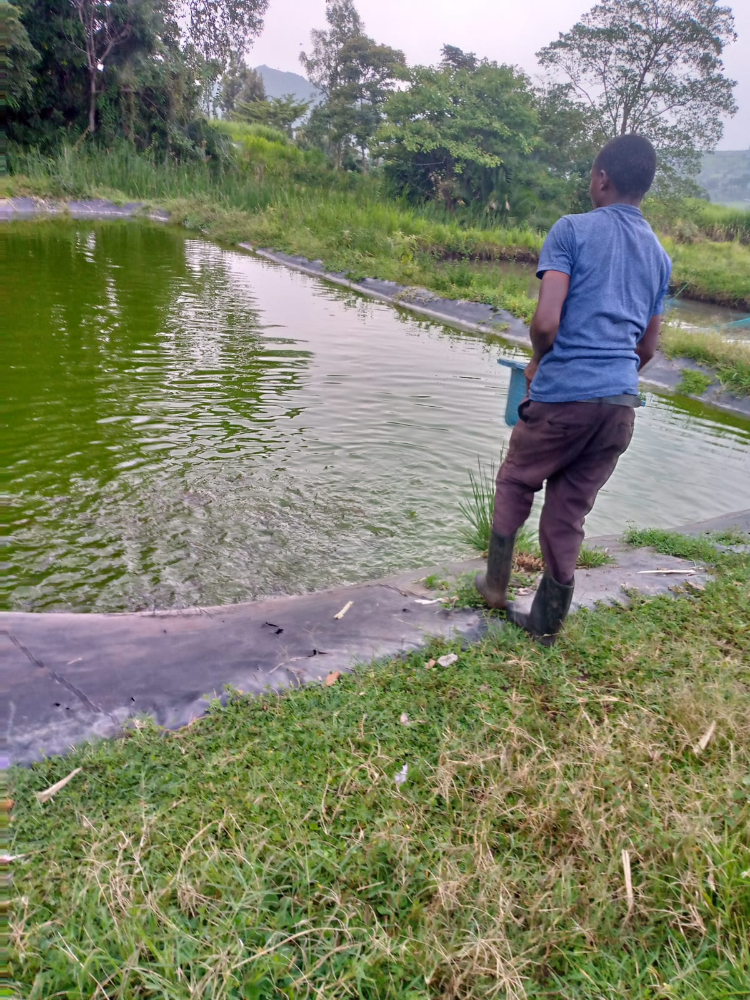
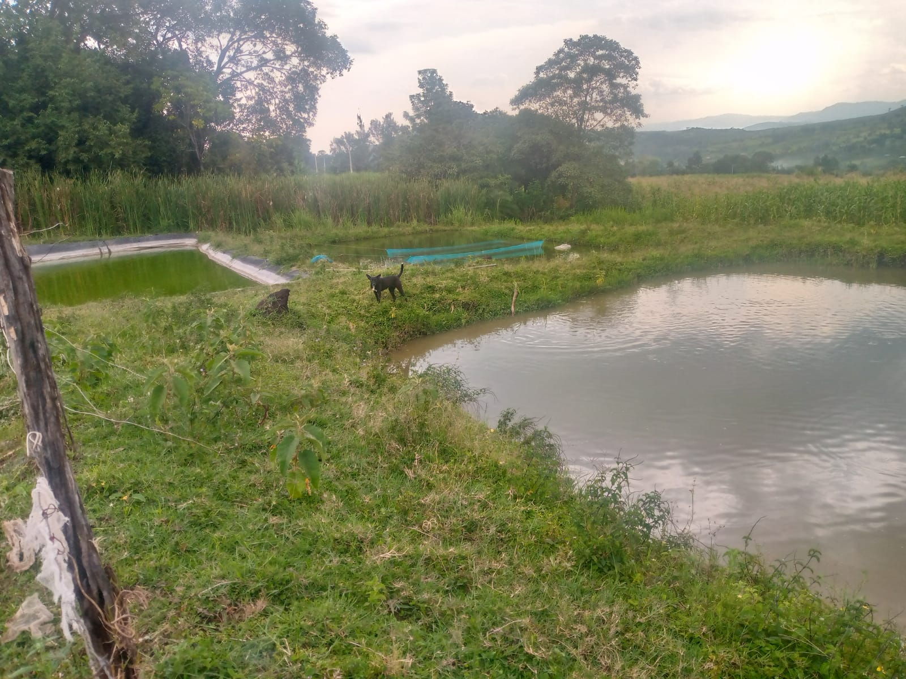
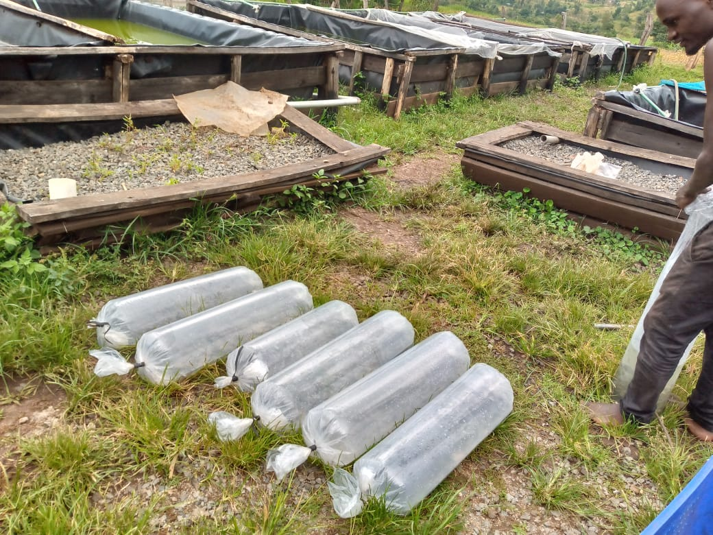
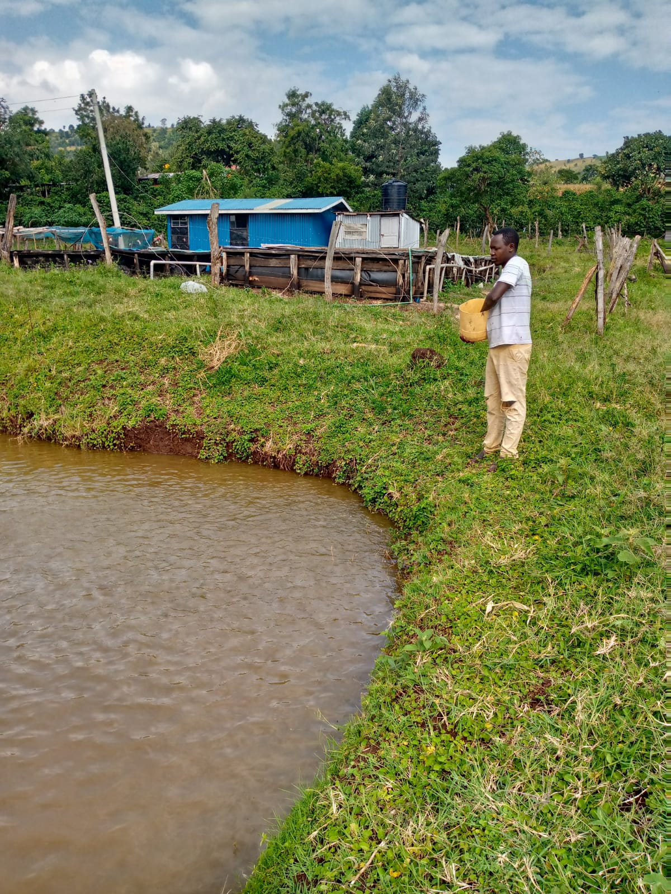

Welcome to Senetwo Fish Farm — a premier climate-smart fish hatchery and aquaculture hub.
Explore More
Senetwo Fish Farm is dedicated to providing healthy, fresh, and environmentally sustainable fish products. We use modern fish farming methods to ensure quality production and reliable supply.
Our farm specializes in fish breeding, fish sales, pond management, and aquaculture consultancy services.
Years Experience
Fish Supplied
Farmers Trained
Professional aquaculture solutions
Quality fingerlings and advanced breeding techniques for high productivity.
Fresh fish supplied to homes, restaurants, and markets.
Hands-on fish farming training for students and farmers.
Expert support for pond construction and maintenance.
Explore our fish farming environment





Reach out for fish supply and consultancy
Songor-Soba Ward, Tinderet Sub-County, Nandi County, Kenya
+254 700 000 000
info@senetwofishfarm.com